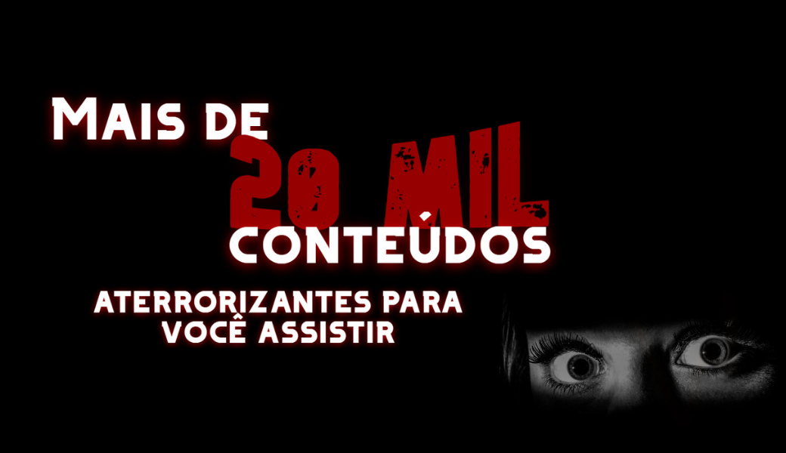
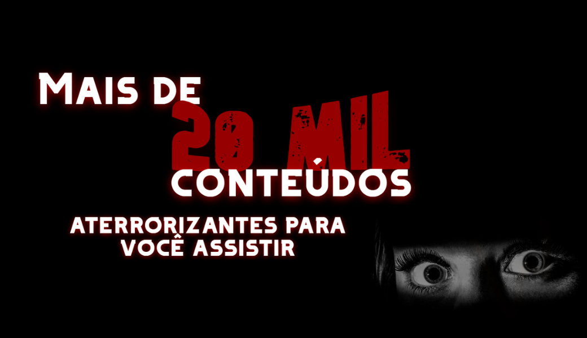
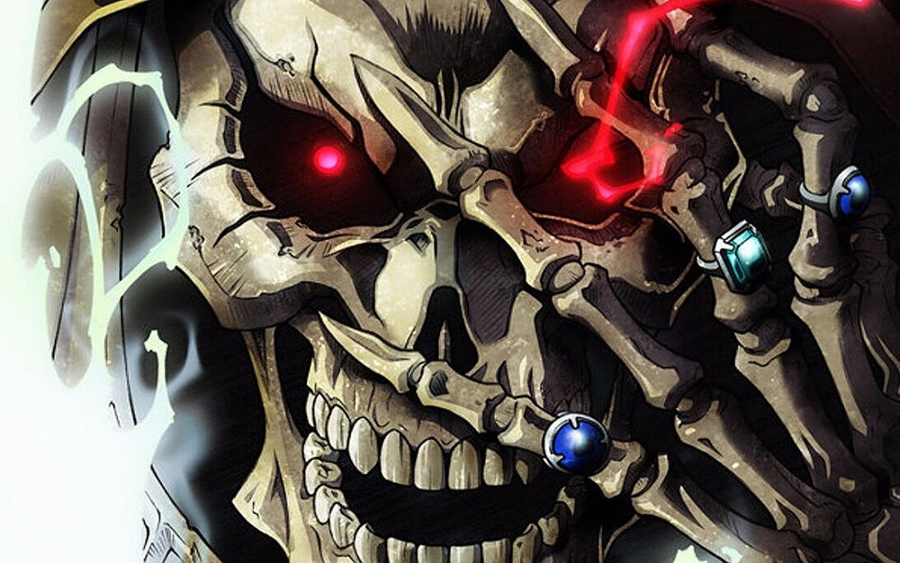

-

Overlord
Yggdrasil é um popular jogo online que, de repente, tem seus servidores desligados. Momonga, um jovem jogador, decide não sair do jogo e é transformado num esqueleto, o Overlord. Como não tem família, amigos ou lugar na sociedade real, o jovem Momonga decide lutar para dominar o novo mundo que o jogo se tornou.
Assistir
-

Castlevania
Castlevania conta a história de Simon Belmont, um caçador de vampiros que foi treinado para derrotar o temível Conde Drácula. Entretanto, para chegar até o vampiro, será preciso passar por uma série de outras criaturas, como zumbis, lobos e outros monstros. Acompanhe esse história cativante adorada por tantos.
Assistir
-
Death Note
Death Note é uma série de anime cheia de esquemas, planos mirabolantes e batalhas mentais. Ryuk desce ao mundo humano para comer maçãs e assistir ao caos instaurado, avisando que quem usasse o caderno cairia em desgraça. Light começa a viver em função do caderno da morte que encontrou.
Assistir
-

Another
Tudo começa com uma historia contada pelos alunos do Colégio Yomita: há 26 anos, havia um aluno chamado Misaki que, desde o primeiro ano, era uma pessoa querida por todos ao seu redor, bom aluno e ótimo atleta. Mas no terceiro ano ele caiu na turma 3-3 e perdeu a vida em um acidente.
Assistir

Yamishibai
Yami Shibai são pequenas histórias que exploram a cultura japonesa, baseando-se na técnica Kami Shibai. Essas histórias são contadas, todos os dias, por um homem de máscara amarela que aparece em um parque infantil. Baseadas em lendas urbanas e mitos de origem asiática.

Hellsing
A Agência Hellsing, ou Ordem Real dos Cavaleiros Protestantes, é uma organização que tem a missão de acabar com criaturas que ameaçam o Império Britânico e a Igreja Protestante. Integra é a herdeira da família Hellsing designada para dirigir a organização.

Mononoke
A série é composta de capítulos individuais nos quais o vendedor de medicamentos encontra, combate e subsequentemente destrói o mononoke. O mononoke é um tipo de ayakashi, espíritos não naturais que persistem no mundo humano, vinculando-se a emoções humanas negativas.

Jujutsu Kaisen
Em um mundo onde Maldições são monstruosidades formadas pelos sentimentos negativos dos humanos, Yuji Itadori é um jovem que, inadvertidamente, engole um talismã mágico para salvar a vida de seus amigos.
Shiki
A história se passa em um verão particularmente quente nos anos noventa, em uma vila pequena e tranquila chamada Sotoba. Uma série de mortes misteriosas começa a se espalhar na aldeia, ao mesmo tempo quando uma família se muda para a mansão estranha Kanemasa há muito tempo abandonada.p>

Okami Kakushi
A história segue o jovem Hiroshi Kuzumi, um rapaz de 16 anos que acaba de se mudar para a, aparentemente tranquila, vila de Jogamachi. Localizada entre as montanhas e bastante distante da cidade, a vila é divida ao meio por um rio que a separa em duas partes: Nova Jigamachi e Velha Jigamachi.